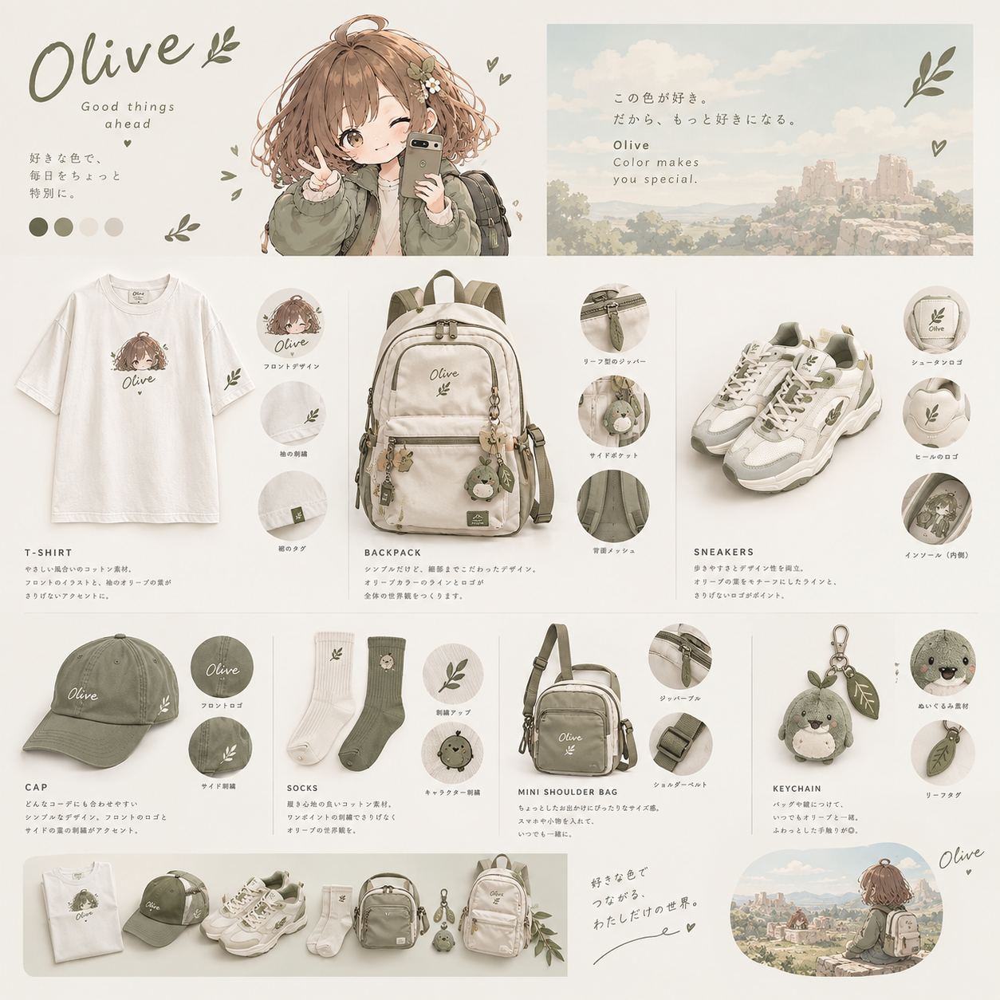
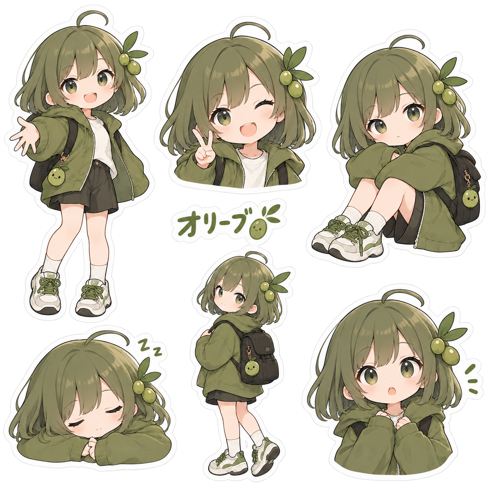

Oliveって、どんな子？
静かな森や木の実が好きなOlive。キャラクターの性格と、その世界をつくる空気を紹介します。
続きを読む →色から生まれるキャラクター、その世界にある小さな物語、そして毎日の暮らし。
IROVA JOURNALでは、Color Worldの奥にあるストーリーを紹介します。

森の緑、木のぬくもり、小さな木の実。
Oliveは、忙しい毎日の中にある静かな時間から生まれたColor Worldです。
色、キャラクター、そして暮らしがどのようにつながっていくのか。Oliveの世界から紹介します。
IROVAが考えているのは、単に「同じ色の商品をそろえる」ことではありません。
Oliveなら自然と落ち着き。
Canyonなら旅と自由。
Purpleなら夜と想像。
ひとつの色からキャラクターが生まれ、世界が生まれ、ファッションやバッグ、小さなアクセサリーへ広がっていく。それがIROVAのColor Worldです。
IROVA Color World →
JOURNALで見つけたColor Worldを、バッグ、ファッション、マスコットや小さなアイテムとして毎日の暮らしへ。
SHOPを見る →